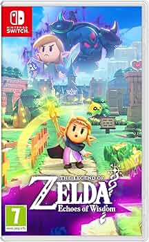

Echoes of Wisdom ist ein 2024 erschienenes Top-Down-Abenteuer mit Fokus auf narrative Puzzles, dichte Levelarchitektur und eine Echo-/Kopier-Mechanik für kreative Lösungen. Es setzt klassische Zelda-Elemente in modernes Puzzle-Design um.
| Titel | The Legend of Zelda: Echoes of Wisdom |
| Veröffentlichung | 26. Sep. 2024 |
| Plattform | Nintendo Switch |
| Entwickler | Nintendo & Grezzo (Partner) |
| Produzent | Nintendo |
| Komponist | Various |
Als Top-Down-Titel legt Echoes of Wisdom den Fokus auf narrative Puzzles und eine Echo-Mechanik, mit der Objekte kopiert oder zeitversetzt eingesetzt werden können. Gameplay ist stark puzzlebasiert: mehrere Ebenen der Manipulation (Echo-Spuren, Duplikationswerkzeuge) erlauben nichtlineare Problemlösungen. Die Story rückt Zelda in den Mittelpunkt und arbeitet mit dichter Levelarchitektur, anspruchsvollen Denkaufgaben und narrativen Verknüpfungen zwischen Rätseln und Charakterentwicklung. Spieler erwartet klassisches Zelda-Feeling mit modernen Puzzle-Systemen und dichter, fokussierter Erzählung.